Pick the joint. Read the angle. Cut the tube once.
Tube Miter Calculator turns the awkward trigonometry of tube fit-up into three numbers you can dial straight into your saw: the miter angle, and the long / short / centre edge lengths of the cut. It draws the end profile to scale, lets you rotate and flip it to match your machine, and works entirely offline.
Built for tube and pipe work: handrails, roll cages, exhausts, frames, greenhouses and structural steel — plus the everyday shop maths (compound cuts, board feet, cutting plans).
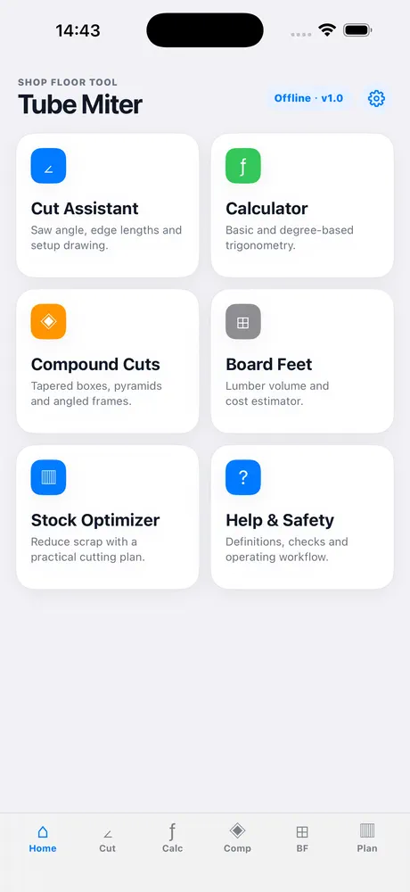
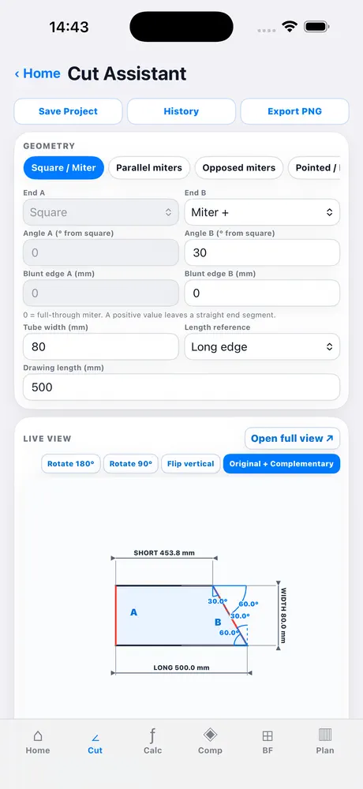
Key Features
Six cut geometries and five shop calculators, all solving offline in a fraction of a second.
∠ Six Cut Geometries
Square / Miter, Parallel miters, Opposed miters, Pointed / Pointed, Pointed / V‑notch and V‑notch / V‑notch. Each preset loads realistic defaults so you change one number, not six.
📏 Long, Short & Centre Lengths
The app reports all three edge lengths of the cut plus the complementary and supplementary angles, so you can match whatever scale your saw prints — 0° from square or 90° from square.
🖼 Dimensioned Live View
A full‑screen, drawn‑to‑scale end profile with dimension arrows. Rotate 90° / 180°, flip vertically and switch between original + complementary or original + supplementary labelling to match the part on your bench.
◈ Compound Cuts
Miter angle and blade tilt for tapered boxes, pyramids and angled frames. Enter the number of sides, side slope, panel height and thickness — get saw settings, slant height and edge offset.
⊞ Board Feet & Cost
Lumber volume from thickness, width and length, with quantity, price per board foot and an optional waste factor. Metric or imperial.
▥ Stock Optimizer
Give it the raw bar length, kerf and end trim plus your required pieces — it lays out a practical cutting plan and tells you what is left over.
ƒ Shop Calculator
A purpose‑built keypad with degree‑based trigonometry (sin, cos, tan and inverses) and one‑tap copy of the result — no fighting the stock iOS calculator in gloves.
💾 Projects & PNG Reports
Save inputs to History under a project name, reload them on the next job, and export a PNG report to Photos or straight to the iOS share sheet.
🔒 Offline & Private
No internet, no sign‑in, no analytics. Units (mm / in), keep‑screen‑awake and reset are the only settings — everything else happens on your device.
See It in Action
Four short screen captures recorded on iPhone 17 Pro Max — no editing, no voiceover.
Switching cut geometries
Tap through all six presets — the drawing and every length update as you go.
Live View: rotate, flip, re‑label
Open the full view, rotate 90°, flip vertically and switch the angle labelling.
Shop calculator
100 × sin 30° = 50 on the built‑in keypad, then copy the result with one tap.
The other shop modules
Compound cuts, board feet and the stock optimizer solve as you type.
How It Works
Four steps from a joint on the bench to numbers on your saw.
Step‑by‑Step Tutorial
Every screen in the app, in the order you actually use it.
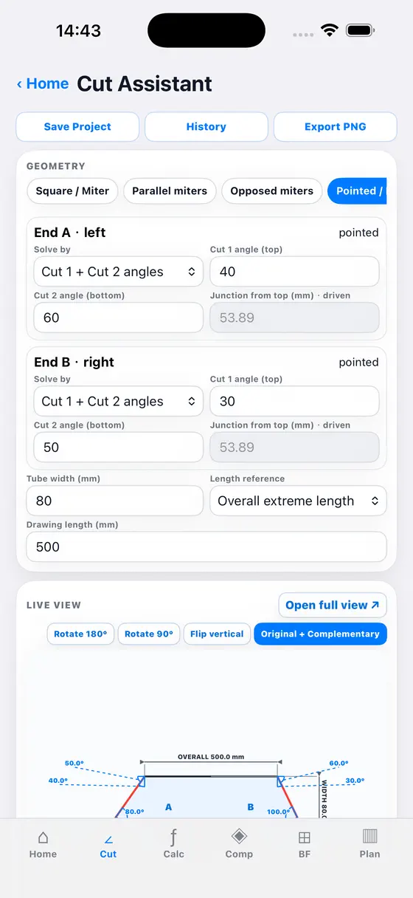
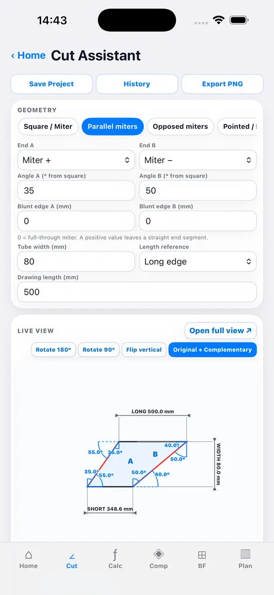
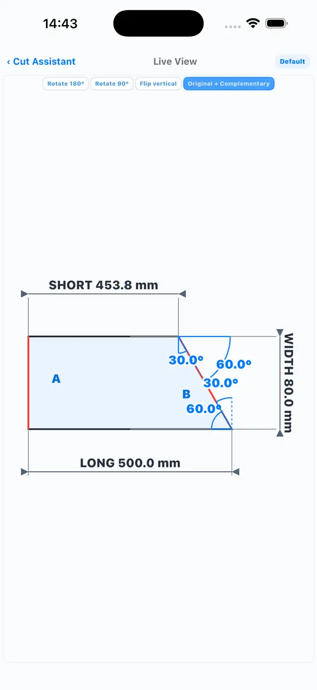
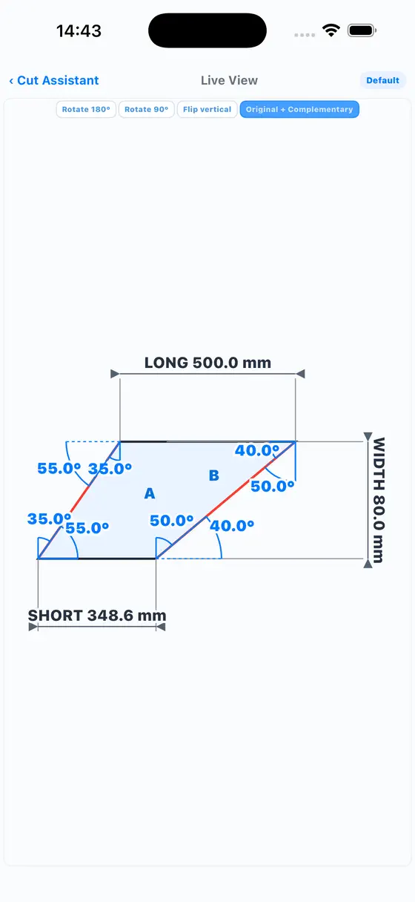
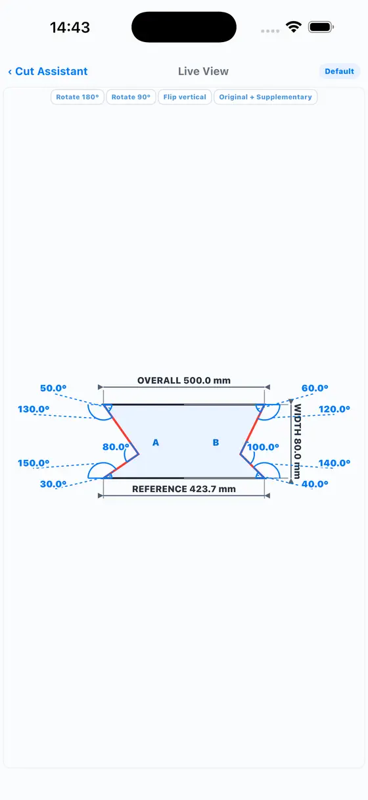
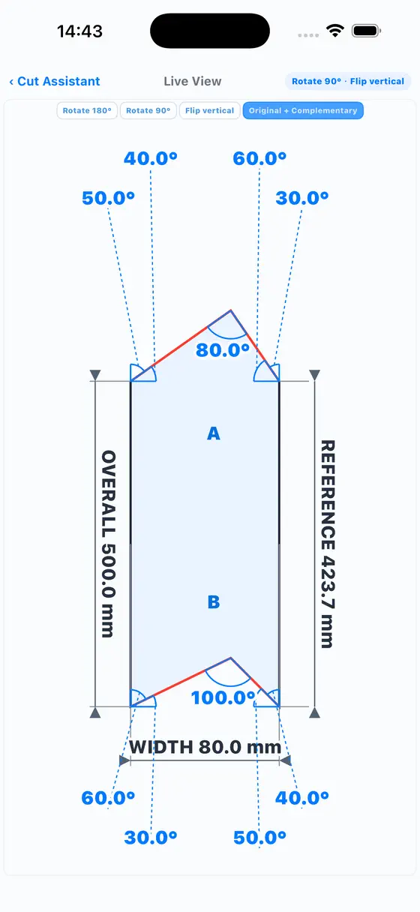
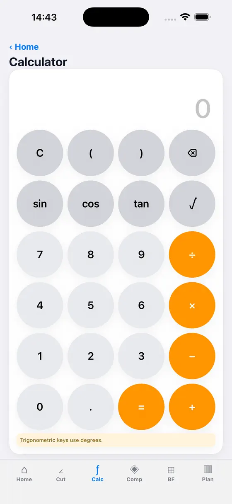
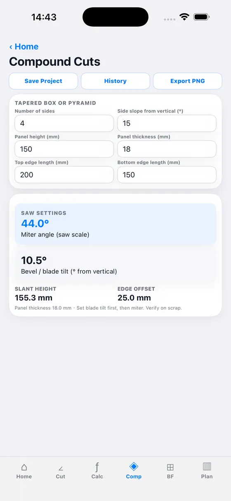
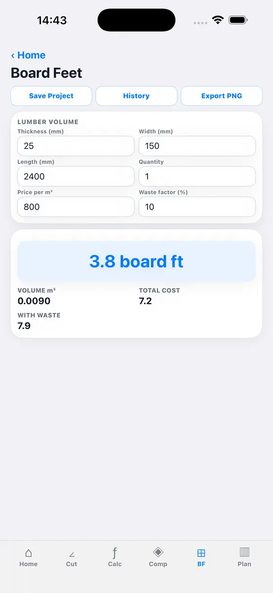
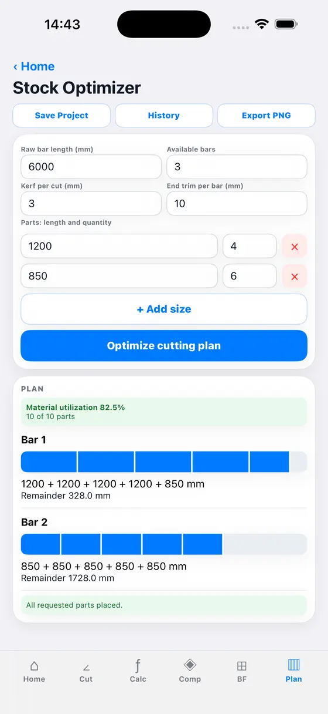
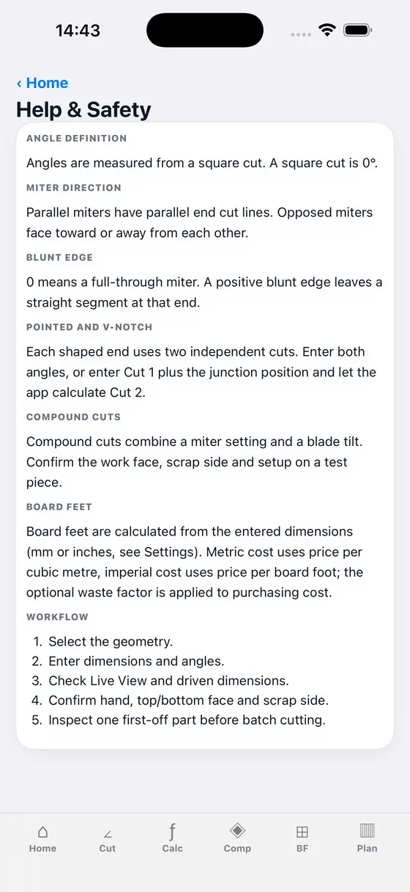
Real‑World Use Cases
Where a miter calculation actually earns its keep.
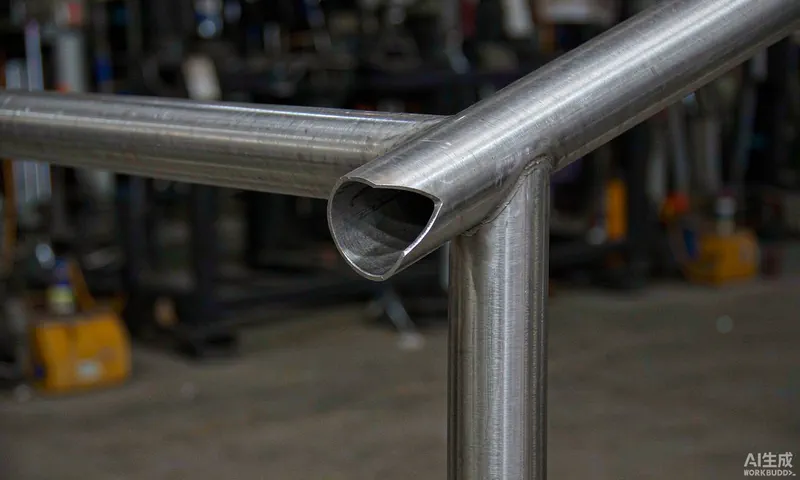
Handrails & Balustrades
Cut the rail to meet the post at the exact rake angle, or cope a fish‑mouth saddle so the tube wraps the post cleanly. Rotate the live view to see the joint the way you will hold it at the top of the stairs.
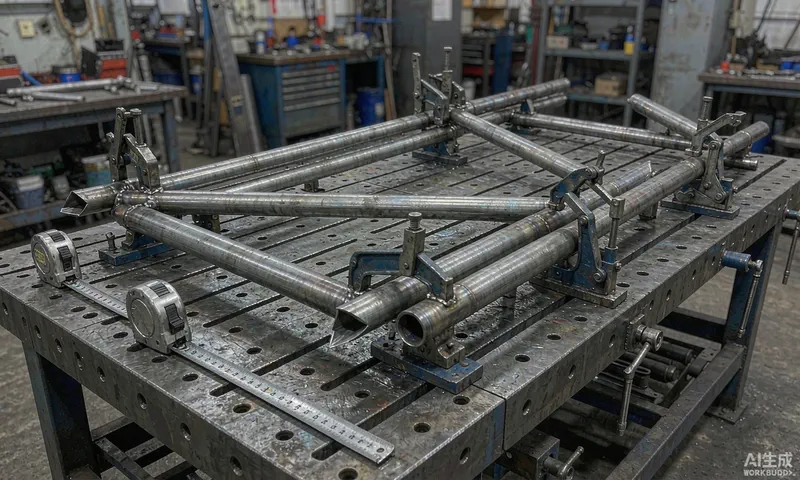
Roll Cages, Chassis & Frames
Node-heavy tube structures are mostly pointed and V‑notch cuts. Set the joint angle once, get the long / short / centre lengths, and cut every tube at that node from the same numbers.
Job‑Site Fit‑Up, No Signal
Remote sites, shipping containers and basement plant rooms have no reception. Everything in the app runs on the device, so the calculation is there when you need it.
Frequently Asked Questions
How is the miter angle defined?
The miter angle is measured from a square cut, so a square cut is 0°. The live view also shows the complementary (90° − angle) or supplementary values, so you can match the scale printed on your saw.
What is the difference between a pointed cut and a V‑notch cut?
A pointed cut tapers the tube end to a single point and is used where one tube meets another at an angle. A V‑notch (fish‑mouth) cut removes a V‑shaped saddle so the tube wraps a round post or another tube — the classic joint for handrails, T‑joints and roll cages. The app handles both, and the pointed / V‑notch combination.
How do I switch between millimetres and inches?
Tap the gear icon on the home screen and choose Metric or Imperial. Existing values are converted automatically and the choice is remembered.
Why can't I save a report to Photos?
The app needs “Add Photos Only” permission. Enable it in iOS Settings → Privacy & Security → Photos → Tube Miter Calculator. You can always use the Share option instead.
Does the app need an internet connection?
No. All calculations and saved projects stay on your device. There is no account, no analytics and no tracking — see the Privacy Policy.
Can I save a job and come back to it?
Yes. Save the inputs to History under a project name and reload them later — for each module separately (Cut, Compound, Board Feet, Stock). Delete entries you no longer need from the same panel.
Does it work on iPad?
Yes. It is a universal app with a wider layout on iPad and full screen‑orientation support.
How accurate are the results?
The maths is exact for ideal geometry; real accuracy depends on how well your inputs match the material — measured diameter, wall thickness, joint angle and kerf. Always cut one first‑off part and check the fit before batch cutting.
How do I contact support?
Email wangning.engineer@outlook.com. Typical response time is 24–48 hours.
Safety Note
Results are setup aids. Always confirm end identity, top / bottom face, blunt‑edge side, scrap side and kerf, and check one first‑off part before batch cutting. Wear eye and hearing protection, and follow your machine’s manual.